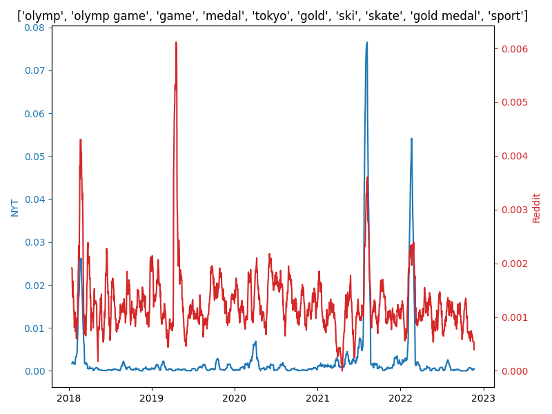
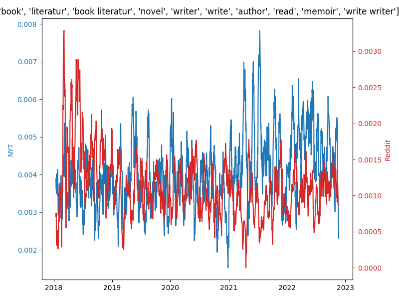

Topical Allignment Between the NYT and Reddit
120 NYT-based topics identified by BERTopic. Distributions are calculated as the normalized daily number of memes (Reddit) or articles (NYT) posted about the topic. Top words associated with topic in plot titles.
 